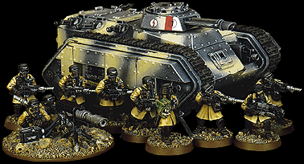

|

|
Due to the massive population of Armageddon, Imperial Guard regiments can easily be raised through volunteer efforts, drafts, and even from street gangs. In addition to this, Armageddon is one of the prime manufacturers of the Chimera transport tank for the fighting forces of the Imperium. This means the Imperial Guard forces stationed upon the planet are able to field a large number of these sturdy transport vehicles. These Armageddon Steel Legions make use of air filtration masks as well as the airtight Chimeras to effectively fight in and traverse across the vast ash wastes that surround the hives of Armageddon.
In modeling terms this is a great chance to tackle a unique army! Armageddon Steel Legions can be composed entirely of Chimera mounted troops and other vehicles like Leman Russ Tanks and Sentinel walkers. This additional army list for the Imperial Guard introduces an exciting new challenge when taking your force to war. Hit the enemy hard, fast and exactly where you want due to the flexible combination of troops transported in Chimeras! With a skilled commander behind this mobile iron-clad army, things are going to be really tough for the Ork invaders!
|